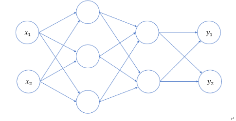

DeepLearning
深度学习基础
1. 深度学习概述
1.1 深度学习简介
深度学习作为机器学习的一个分支，专注于使用多层神经网络（深度神经网络）来建模和解决问题。
人脑中有很多相互连接的神经元，当大脑处理信息时，这些神经元之间通过电信号和化学物质相互作用，在大脑的不同区域之间传递信息。神经网络使用人工神经元模仿这种生物现象，这些人工神经元由称为节点的软件模块构成，使用数值计算来进行通信和传递信息。
深度学习 vs 传统机器学习
深度学习能够自动提取特征，适合处理非结构化数据（图像、音频、文本等），而传统机器学习通常需要人工特征工程。
1.2 深度学习的特点
- 使用多层神经网络，能够自动提取数据的多层次特征
- 适合处理非结构化数据，如图像、音频、文本等
- 依赖大量数据和计算资源，训练时间较长
- 模型复杂，通常被视为"黑箱"，解释性较差
2. 神经网络基础
2.1 神经网络的构成
人工神经网络（Artificial Neural Network，ANN）简称神经网络（NN），是一种模仿生物神经网络结构和功能的计算模型。大多数情况下人工神经网络能在外界信息的基础上改变内部结构，是一种自适应系统（adaptive system），通俗地讲就是具备学习功能。
人工神经网络中的神经元，一般可以对多个输入进行加权求和，再经过特定的激活函数转换后输出。
使用多个神经元就可以构建多层神经网络：
- 最左边的一列神经元都表示输入，称为输入层
- 最右边一列表示网络的输出，称为输出层
- 输入层与输出层之间的层统称为中间层（隐藏层）
- 相邻层的神经元相互连接（全连接），每个连接都会有一个权重
- 神经元中的信息逐层传递（称为前向传播 forward），上一层神经元的输出作为下一层神经元的输入
2.2 激活函数
激活函数是连接感知机和神经网络的桥梁。如果没有激活函数，整个神经网络等效于单层线性变换。激活函数必须是非线性函数，为神经网络引入非线性能力。
3. 神经网络的简单实现
3.1 三层神经网络结构
以下图为模型，实现从输入到输出的前向传播：

3.2 代码实现
使用 NumPy 实现三层神经网络的前向传播：
import numpy as np
def sigmoid(x):
return 1 / (1 + np.exp(-x))
def identity_function(x):
return x
def init_network():
"""初始化网络参数"""
network = {}
network['W1'] = np.array([[0.1, 0.3, 0.5], [0.2, 0.4, 0.6]])
network['b1'] = np.array([0.1, 0.2, 0.3])
network['W2'] = np.array([[0.1, 0.4], [0.2, 0.5], [0.3, 0.6]])
network['b2'] = np.array([0.1, 0.2])
network['W3'] = np.array([[0.1, 0.3], [0.2, 0.4]])
network['b3'] = np.array([0.1, 0.2])
return network
def forward(network, x):
"""前向传播"""
w1, w2, w3 = network['W1'], network['W2'], network['W3']
b1, b2, b3 = network['b1'], network['b2'], network['b3']
a1 = np.dot(x, w1) + b1
z1 = sigmoid(a1)
a2 = np.dot(z1, w2) + b2
z2 = sigmoid(a2)
a3 = np.dot(z2, w3) + b3
y = identity_function(a3)
return y
network = init_network()
x = np.array([1.0, 0.5])
y = forward(network, x)
print(y)
权重矩阵形状速查
对于 \(N\) 个输入节点和 \(M\) 个当前层节点，权重矩阵形状为 \(N \times M\)
PyTorch
基于带自动微分系统的深度神经网络框架
1. 安装与导入
[project]
name = "nlp"
version = "0.1.0"
requires-python = ">=3.12"
dependencies = [
"torch",
"torchvision",
"torchaudio",
]
[[tool.uv.index]]
name = "pytorch-gpu"
url = "https://download.pytorch.org/whl/cu126"
explicit = true # 关键：这确保只有明确指定该索引的包才去这里找
# 强制指定这三个包去 pytorch-gpu 索引找（这步最关键）
[tool.uv.sources]
torch = { index = "pytorch-gpu" }
torchvision = { index = "pytorch-gpu" }
torchaudio = { index = "pytorch-gpu" }
GPU 支持
如需 CUDA 支持，请参考 PyTorch 官方安装指南 选择对应版本，上面给出的 gpu 安装是通过 uv 安装，如果要通过 pip | conda，直接看官网给出的安装命令即可。
# 验证安装是否成功
import torch
print(torch.__version__)
print(torch.cuda.is_available())
# output
2.12.0+cu126
True
2. Tensor 基础
深度学习处理的数据（图像、文本、声音等）最终都要转换为数字。在 PyTorch 中，所有数据的存储与计算都依赖于 张量（Tensor）——NumPy 数组的升级版，既能存储多维数据，又支持 GPU 加速，是深度学习模型训练的基石。
Tensor vs NumPy
Tensor 在接口设计上大量借鉴了 NumPy，熟悉 NumPy 的用户可以快速上手。而 Tensor 独有的 GPU 加速和自动微分能力，使其成为深度学习场景下的首选数据结构。
官方文档
2.1 创建张量
创建张量的方式与 NumPy 创建 ndarray 基本一致，主要分为以下几类：
按内容创建
内容可以是一个标量、可以是一个 python 列表，也可以是一个 ndarray。
指定形状创建
通过传入形状参数创建特定结构的张量，或基于已有张量创建同形状的张量。
# 基本构造函数
torch.Tensor(3, 4) # 默认 float32，值为未初始化
# 特殊值张量
torch.zeros(3, 4) # 全 0
torch.ones(3, 4) # 全 1
torch.full((3, 4), 5) # 指定值填充
torch.empty(3, 4) # 未初始化
torch.eye(3) # 单位矩阵
# 基于已有张量创建同形状张量
torch.zeros_like(t) # 同形状全 0
torch.ones_like(t) # 同形状全 1
torch.full_like(t, 5) # 同形状指定值
torch.empty_like(t) # 同形状未初始化
按区间创建
torch.arange(start, end, step) # [start, end)，步长
torch.linspace(start, end, num) # [start, end]，等分 num 份
torch.logspace(start, end, num) # [start, end]，按照对数去分 num 份
随机值创建
| 方法 | 分布 | 说明 |
|---|---|---|
torch.rand(size) |
U(0,1) | 均匀分布 |
torch.randn(size) |
N(0,1) | 标准正态 |
torch.randint(low, high, size) |
U(low,high) | 离散均匀 |
torch.normal(mean, std, size) |
N(mean,std) | 自定义正态 |
torch.rand(3, 4) # x ~ U(0,1)
torch.randn(3, 4) # x ~ N(0,1)
torch.randint(0, 10, (3, 4)) # x ~ U[0,10)
torch.normal(0, 1, size=(3, 4)) # x ~ N(0,1)
# 随机种子 & 随机排列
torch.manual_seed(42)
torch.randperm(10) # 0~9 随机排列
指定数据类型
PyTorch 提供了两种指定数据类型的方式：通过 dtype 参数显式指定，或使用类型特定的构造函数别名。
# 方式一：dtype 参数
torch.tensor([1, 2], dtype=torch.float32)
torch.tensor([1, 2], dtype=torch.int64)
# 方式二：类型构造函数
torch.FloatTensor(3, 4) # float32
torch.DoubleTensor(3, 4) # float64
torch.IntTensor(3, 4) # int32
torch.LongTensor(3, 4) # int64
torch.BoolTensor(3, 4) # bool
2.2 类型转换
类型转换主要有三种方式：t.type() 通用转换、t.to() 推荐写法、以及 t.long() / t.int() 等快捷方法。
非原地操作
类型转换不会原地修改，而是返回新张量。
nt = t.type(torch.float64) # 通用转换
nt = t.to(torch.float64) # 推荐写法
t.float() # 快捷方法
t.long() # int64
t.int() # int32
2.3 Tensor 与 NumPy 互转
Tensor 与 NumPy 之间可以相互转换：.numpy() 将 Tensor 转为 ndarray，torch.from_numpy() 或 torch.tensor() 将 ndarray 转为 Tensor，但两者内存行为不同（见下方警告）。
# Tensor → NumPy（共享内存）
arr = t.numpy()
# 避免共享（拷贝）
arr = t.numpy().copy()
# NumPy → Tensor（共享内存）
t = torch.from_numpy(arr)
# 拷贝，不共享内存
t = torch.tensor(arr)
注意内存行为差异
numpy()和from_numpy()与原始数据共享内存，修改一方会影响另一方torch.tensor()则是拷贝，不共享内存，修改互不影响
2.4 提取标量
2.5 形状操作
Tensor 的形状操作包括重塑、维度交换、增删维度等，灵活使用可以适配不同层对输入形状的要求。
非原地操作
PyTorch 中，除非方法名带 _ 后缀（如 add_()），否则所有操作均不原地修改——包括形状操作在内，都会返回新张量。
| 方法 | 说明 | 示例 |
|---|---|---|
reshape() |
改变形状（必要时拷贝） | t.reshape(3, -1) |
view() |
改变形状（需连续） | t.view(3, -1) |
transpose(d1, d2) |
交换两维度 | t.transpose(0, 1) |
permute(*dims) |
重排所有维度 | t.permute(2, 0, 1) |
mT |
最后两维转置 | t.mT |
unsqueeze(dim) |
增加维度 | t.unsqueeze(0) |
squeeze(dim) |
删除大小为 1 的维度 | t.squeeze() |
t.reshape(3, -1) # -1 自动推导
t.view(3, -1) # 要求 t.is_contiguous()
t.permute(2, 0, 1) # 维度重排
t.unsqueeze(0) # [3,4] → [1,3,4]
t.squeeze() # 删除所有 size=1 的维度
t.transpose(0, 1) # 交换第 0、1 维
t.mT # 矩阵转置（最后两维）
# 逆序所有维度（替代已弃用的 t.T）
t2 = t.permute(range(t.ndim - 1, -1, -1))
reshape vs view
view()要求张量内存连续，否则报错reshape()自动处理连续性，必要时会拷贝
2.6 基本运算
PyTorch 支持丰富的逐元素运算，每个运算都有对应的不原地和原地两种版本。
| 类型 | 不原地 | 原地（带 _） |
|---|---|---|
| 加法 | t.add(x) / t + x |
t.add_(x) |
| 减法 | t.sub(x) / t - x |
t.sub_(x) |
| 乘法 | t.mul(x) / t * x |
t.mul_(x) |
| 除法 | t.div(x) / t / x |
t.div_(x) |
| 幂 | t.pow(n) / t ** n |
t.pow_(n) |
| 开方 | t.sqrt() |
t.sqrt_() |
| 对数 | t.log()（底数 e） |
t.log_() |
| 指数 | t.exp() |
t.exp_() |
| 负数 | t.neg() / -t |
t.neg_() |
原地操作
带 _ 的方法是原地操作，直接修改原张量，节省内存。等价于 +=、-= 等。
对数与指数
t.log()是自然对数，底数为 e（约 2.718）- 其他底数：
torch.log2()（底数 2）、torch.log10()（底数 10） - 换底公式：\(\log_a(x) = \frac{\ln(x)}{\ln(a)}\)，即
torch.log(x) / torch.log(a)
2.7 矩阵乘法
当张量维度超过 2 维时，@ 将后两维视为矩阵，前面所有维度视为批次维度。广播规则作用于批次维度，后两维必须满足矩阵乘法的维度要求（前者的列数 = 后者的行数）。
# 多维矩阵乘法示例
t1 = torch.randn(2, 2, 3, 3) # [batch_dims..., M, K]
t2 = torch.randn(2, 2, 3, 10) # [batch_dims..., K, N]
result = t1 @ t2 # [batch_dims..., M, N] → [2, 2, 3, 10]
2.8 统计方法
dim 参数指定沿哪个轴（axis）做归约操作——该轴会被"压缩掉"，与 NumPy 的 axis 含义完全一致。
以形状为 [D0, D1, D2] 的三维张量为例：
dim=0：压缩第 0 轴 → 结果形状[D1, D2]dim=1：压缩第 1 轴 → 结果形状[D0, D2]dim=2：压缩第 2 轴 → 结果形状[D0, D1]
以二维矩阵为例更直观：
dim=0：跨行归约（压缩行 → 每列一个结果）dim=1：跨列归约（压缩列 → 每行一个结果）
t = torch.tensor([[1, 2],
[3, 4]])
t.sum(dim=0) # [4, 6] → 列求和：1+3, 2+4
t.sum(dim=1) # [3, 7] → 行求和：1+2, 3+4
# 常用统计方法（不指定 dim 则对所有元素操作）
t.sum(dim=0) # 求和
t.mean(dim=0) # 均值
t.max(dim=0) # 最大值及索引（返回 values, indices）
t.min(dim=0) # 最小值及索引
t.argmax(dim=0) # 最大值索引
t.argmin(dim=0) # 最小值索引
t.std(dim=0) # 标准差
t.unique() # 去重
t.sort(dim=0) # 排序（返回 values, indices）
2.9 索引操作
Tensor 继承了 NumPy 强大的索引能力，支持简单索引、切片、花式索引（列表）和布尔索引，这些都是原生 Python 列表所不具备的。
# 简单索引
t[1, 2, 3]
# 范围索引（步长必须 > 0）
t[:, 0:2, ::2]
# 列表索引（一对一）
t[[0, 1, 2], [1, 2, 3]]
# 列表嵌套索引（支持广播，一对多）
t[[[0], [1]], [1, 2]]
# 布尔索引
t[t > 5] # 选择大于 5 的元素
mask = t[:, 0] > 5
t[mask] # 选择满足条件的行
2.10 拼接操作
PyTorch 提供两种拼接方式：cat 沿现有维度拼接（不增维），stack 沿新维度堆叠（增一维）。两者都要求输入张量形状完全一致。
t1 = torch.randn(2, 3)
t2 = torch.randn(2, 3)
torch.cat([t1, t2], dim=0) # [4, 3]
torch.stack([t1, t2], dim=0) # [2, 2, 3]
cat vs stack
cat：沿现有维度拼接，不增加维度stack：沿新维度堆叠，增加一个维度stack的本质：先在指定 dim 对各张量做unsqueeze，再cat。例如torch.stack([t1, t2], dim=0)等价于：
3. 自动微分 autograd
官方文档
训练神经网络时，框架会根据设计好的模型构建一个计算图，跟踪数据通过哪些操作产生输出，并通过反向传播算法根据损失函数的梯度调整参数。
考虑最简单的单层神经网络，具有输入 x、参数 w、偏置 b 以及损失函数：

import torch
# 定义输入和真实标签
x = torch.tensor([[1.0]])
y_true = torch.tensor([[2.0]])
# 初始化模型参数（requires_grad=True 表示追踪梯度）
w = torch.randn(1, 1, requires_grad=True)
b = torch.randn(1, requires_grad=True)
# 前向传播
z = x * w + b
# 计算损失
loss = torch.nn.MSELoss()
loss_value = loss(z, y_true)
# 反向传播
loss_value.backward()
# 查看梯度
print(w.grad)
print(b.grad)
# 检查叶子节点
print(x.is_leaf) # True（用户创建）
print(z.is_leaf) # False（计算得到）
print(loss_value.is_leaf) # False（计算得到）
3.1 关键概念
| 概念 | 说明 |
|---|---|
requires_grad |
是否追踪梯度 |
grad_fn |
记录如何计算此张量的函数 |
is_leaf |
用户创建的张量为 True，计算得到的为 False |
backward() |
从该节点反向传播计算梯度 |
data |
张量的实际数据 |
动态计算图
PyTorch 是动态图机制，在计算过程中逐步搭建计算图，每个 Tensor 存储 grad_fn 供自动微分使用。
3.2 梯度累积与清零
梯度累积机制
非叶子节点的梯度在反向传播后会被释放（除非设置 retain_grad=True）。
叶子节点的梯度在反向传播后会保留并累积。通常需要使用 optimizer.zero_grad() 清零。
3.3 脱离计算图
有时需要将某些计算移出计算图：
# 方法 1：detach（共享内存，不追踪梯度）
x = torch.rand(2, 2, requires_grad=True)
y = x.detach()
# 方法 2：上下文管理器（整个代码块不追踪）
with torch.no_grad():
y = x * 2
# 方法 3：clone（拷贝副本，仍追踪梯度）
y = x.clone()
推理模式
模型推理时使用 with torch.no_grad(): 可显著减少内存占用。
4. 神经网络搭建
官方文档
详见 torch.nn 文档
4.0 全连接层
全连接层（Fully Connected Layer，也称线性层）是神经网络的基础组件，对输入特征做线性变换：
- \(x\)：输入特征，形状
[N, in_features] - \(W\)：权重矩阵，形状
[out_features, in_features] - \(b\)：偏置向量，形状
[out_features] - \(y\)：输出特征，形状
[N, out_features]
在 PyTorch 中由 nn.Linear 实现：
| 参数 | 作用 | 说明 |
|---|---|---|
in_features |
输入特征维度 | 必须与上一层输出维度一致 |
out_features |
输出特征维度 | 决定当前层输出形状 |
bias |
是否启用偏置 | 默认 True，可设为 False 关闭 |
可训练参数
nn.Linear 初始化后自动生成两个可训练参数：
print(linear.weight.shape) # torch.Size([3, 2]) → [out_features, in_features]
print(linear.bias.shape) # torch.Size([3]) → [out_features]
weight 形状约定
PyTorch 中 weight 的形状为 [out_features, in_features]——第一维是输出，第二维是输入。这对应公式中的 \(W\)，前向传播时计算 \(xW^T\)（即 x @ weight.T）完成线性变换。
| 参数 | 形状 | 说明 |
|---|---|---|
weight |
[out_features, in_features] |
输出在前，输入在后，对应 \(W^T\) |
bias |
[out_features] |
每个输出维度一个偏置 |
前向传播
nn.Linear 的 forward 方法封装了 y = xW^T + b 的计算逻辑。两种调用方式：
批量维度支持
输入 x 的最后一维必须等于 in_features，支持任意数量的前置批量维度：
[N, in_features]→[N, out_features]（标准批量）[N, T, in_features]→[N, T, out_features]（序列数据）[N, C, H, in_features]→[N, C, H, out_features]
4.1 自定义模型（nn.Module）
在 PyTorch 中模型就是 Module，各网络层、模块、甚至单个激活函数、损失函数也是 Module。Module 是所有神经网络的基类。
定义模型需要继承 nn.Module 并实现两个方法：
__init__：定义网络各层结构并初始化参数forward：前向传播的具体实现
class MyModel(nn.Module):
def __init__(self):
super().__init__()
self.linear1 = nn.Linear(3, 4)
self.linear2 = nn.Linear(4, 4)
self.linear3 = nn.Linear(4, 2)
# 初始化网络参数
nn.init.xavier_normal_(self.linear1.weight)
nn.init.kaiming_normal_(self.linear2.weight)
def forward(self, x):
z1 = torch.tanh(self.linear1(x))
z2 = torch.relu(self.linear2(z1))
return torch.softmax(self.linear3(z2), dim=1)
4.2 Sequential 快捷构建
nn.Sequential 是一个容器，将各层按顺序传入，前向传播时自动依次执行。
适合简单线性堆叠，代码简洁直观：
nn.ModuleList 与 nn.ModuleDict
如果层数不固定或需要动态索引，可以用 nn.ModuleList 或 nn.ModuleDict：
4.3 查看参数
模型定义完成后，掌握查看参数的方法对调试和验证模型正确性至关重要。PyTorch 提供了多种查看方式：从单层参数到全局遍历，再到完整的 state_dict 结构，以及第三方可视化工具。
假设基于以下模型来演示：
model = nn.Sequential(
nn.Linear(3, 4),
nn.Tanh(),
nn.Linear(4, 4),
nn.ReLU(),
nn.Linear(4, 2),
nn.Softmax(dim=1)
)
通过 模型.层名.属性 直接访问某层的权重和偏置：
# 第 1 个全连接层
print("linear1 权重形状：", model[0].weight.shape) # torch.Size([4, 3])
print("linear1 权重：\n", model[0].weight)
print("linear1 偏置形状：", model[0].bias.shape) # torch.Size([4])
print("linear1 偏置：\n", model[0].bias)
# 第 3 个全连接层
print("linear2 权重形状：", model[2].weight.shape) # torch.Size([4, 4])
print("linear2 偏置形状：", model[2].bias.shape) # torch.Size([4])
Sequential 索引
nn.Sequential 通过整数索引访问各层：model[0] 是第一个 Linear，model[1] 是 Tanh，model[2] 是第二个 Linear，以此类推。
适合查看模型参数量、验证每层形状：
输出示例：state_dict 是 PyTorch 模型参数的核心存储结构——一个 OrderedDict，键是参数名、值是参数张量，是模型保存与加载的基础。
print("=== 模型状态字典（state_dict） ===")
state_dict = model.state_dict()
for key, value in state_dict.items():
print(f"键名：{key}，形状：{value.shape}")
使用第三方库 torchsummary 可以直观查看模型结构、每层输出形状、参数量和计算量，需先安装：
from torchsummary import summary
# input_size 是单个样本的形状（不含 batch 维度）
summary(model, input_size=(3,), batch_size=10, device="cpu")
----------------------------------------------------------------
Layer (type) Output Shape Param #
================================================================
Linear-1 [10, 4] 16
Tanh-2 [10, 4] 0
Linear-3 [10, 4] 20
ReLU-4 [10, 4] 0
Linear-5 [10, 2] 10
Softmax-6 [10, 2] 0
================================================================
Total params: 46
Trainable params: 46
Non-trainable params: 0
----------------------------------------------------------------
Input size (MB): 0.00
Forward/backward pass size (MB): 0.00
Params size (MB): 0.00
Estimated Total Size (MB): 0.00
----------------------------------------------------------------
多维度输入
对于 CNN 等模型，input_size 传入 (channels, height, width)，如 summary(model, input_size=(3, 224, 224))。
4.4 参数初始化
参数初始化直接影响模型能否收敛以及收敛速度。初始化不当会导致梯度消失/爆炸，使模型无法训练。核心原则是：让每层输出的方差保持稳定，避免信号在传播过程中被放大或缩小到零。
将参数设为固定值，仅用于偏置或特殊调试，不适用于权重：
init.zeros_(m.bias) # 偏置通常初始化为 0
init.constant_(m.weight, 1) # 权重全相同 → 所有神经元对称，失去表达能力
init.eye_(m.weight) # 单位矩阵初始化，仅用于方阵权重
常数初始化权重
权重全设相同值会导致对称性——所有神经元学到同样的特征，模型失效。
用固定分布采样，小随机数打破对称性。但简单随机初始化在深层网络中仍会导致梯度消失：
适合 Tanh / Sigmoid 等饱和型激活函数。 核心思想是让每层输出的方差等于输入的方差，反向传播时梯度的方差也保持稳定：
数学原理
方差 = \(\frac{2}{fan_{in} + fan_{out}}\)（均匀分布），保持信号在前向和反向传播中方差一致。
适合 ReLU / PReLU / LeakyReLU 等非饱和型激活函数。 ReLU 会将一半神经元置零导致方差减半，He 初始化通过放大方差来补偿：
init.kaiming_uniform_(m.weight, mode='fan_in', nonlinearity='relu') # 默认推荐
init.kaiming_normal_(m.weight, mode='fan_in', nonlinearity='relu')
init.kaiming_uniform_(m.weight, mode='fan_in', nonlinearity='leaky_relu')
数学原理
ReLU 版方差 = \(\frac{2}{fan_{in}}\)（均匀分布），比 Xavier 大一倍。
通过 model.apply() 递归地对所有层统一应用初始化策略，适合为不同类型的层设置不同规则：
快速选择指南
| 激活函数 | 推荐初始化 | 原理 |
|---|---|---|
| ReLU / LeakyReLU / PReLU | He (Kaiming) | 补偿 ReLU 置零导致的方差减半 |
| Tanh / Sigmoid | Xavier (Glorot) | 保持前向/反向方差一致 |
| 无激活 / Linear 输出层 | Xavier 或 He 均可 | — |
| 偏置 bias | 常数 0 | 无特殊需求一律初始化为 0 |
4.5 设备管理
为什么要管理设备？
PyTorch 支持在 CPU 和 GPU（CUDA） 两种设备上运行，而二者的内存是隔离的：
- CPU 使用系统内存（RAM），
float32就可以跑 - GPU 使用显存（VRAM），适合大规模并行计算，训练速度比 CPU 快几十倍
设备管理的本质就是一件事：确保张量和模型在同一个设备上。否则会报错：
# ❌ 错误：模型在 GPU，数据在 CPU
model.to("cuda")
x = torch.randn(3, 4) # 默认 CPU
output = model(x) # RuntimeError: Expected all tensors to be on the same device
# ✅ 正确：数据和模型都在同一设备
x = x.to("cuda") # 移到 GPU
output = model(x) # 正常运行
推荐写法
最通用的做法是先检测设备，再统一移动：
# 检测并选择设备 —— 有 GPU 就用，没有就 CPU
device = torch.device("cuda" if torch.cuda.is_available() else "cpu")
# 模型移到设备
model = MyModel().to(device)
# 数据移到设备（训练循环中）
for batch in dataloader:
x = batch["image"].to(device)
y = batch["label"].to(device)
output = model(x)
核心操作
| 操作 | 作用 | 说明 |
|---|---|---|
torch.device("cuda") |
定义 GPU 设备 | 默认使用第 0 块 GPU |
tensor.to(device) |
张量移到指定设备 | 返回新张量，原张量不变 |
model.to(device) |
模型所有参数移到指定设备 | 原地操作（nn.Module 特例） |
tensor.cpu() |
张量移到 CPU | 等同于 .to("cpu") |
tensor.cuda() |
张量移到 GPU | 等同于 .to("cuda") |
一个常见的坑
模型用了 .to(device) 后创建的新张量不会自动在那个设备上——需要手动处理：
model.to("cuda")
# ⚠️ 在 forward 里不要这样写
def forward(self, x):
w = torch.zeros(5, 5) # ❌ 默认 CPU，和 x 可能不在同一设备
return x @ w
# ✅ 正确做法：用输入张量的设备创建
def forward(self, x):
w = torch.zeros(5, 5, device=x.device) # 跟随输入设备
return x @ w
device 是设计选择
为什么 PyTorch 不自动帮你搬数据？因为显式管理让你清楚每一步的设备和开销——尤其在多 GPU 或 CPU/GPU 混合场景下，自动行为反而容易出 bug。养成 .to(device) 的习惯，是 PyTorch 开发的基本功。
5. 神经网络的训练
5.1 损失函数
神经网络的训练目标就是找到一组权重参数使预测值尽可能接近真实值。损失函数（Loss Function） 就是衡量预测值与真实值之间差距的指标——损失越小，模型越好，训练就是围绕最小化损失展开的。
损失函数的选择取决于任务类型：
- 分类任务：交叉熵损失（CrossEntropy / BCE）
- 回归任务：均方误差（MSE）、平均绝对误差（MAE）、Smooth L1
参数顺序约定
PyTorch 所有损失函数的参数顺序都是 先 pred（预测），后 target（真实）：
传反了模型也能跑（类型兼容时），但 loss 算的是错的，模型不会收敛。先 predict，后 target 记牢就好。平均绝对误差，计算预测值与真实值之差的绝对值之和的均值。对异常值不敏感（梯度恒定），适合回归任务：
均方误差，计算预测值与真实值之差的平方的均值。对异常值敏感（平方放大误差），适合回归任务：
output = torch.randn(5)
target = torch.randn(5)
loss_fn = nn.MSELoss()
loss = loss_fn(output, target)
MAE vs MSE
| 特性 | MAE | MSE |
|---|---|---|
| 对异常值敏感度 | 低（梯度恒定） | 高（平方放大） |
| 梯度特性 | 处处为 ±1 | 越远离 0 梯度越大 |
| 适用场景 | 异常值较多的数据 | 异常值少、追求平滑 |
结合了 MAE 和 MSE 的优点——误差小时用 MSE 平滑，误差大时用 MAE 防梯度爆炸。常用于目标检测（如 Faster R-CNN 的回归分支）：
适用于二分类任务，衡量两个概率分布之间的差距。输入 \(\hat{y}\) 需经过 Sigmoid 映射到 \((0, 1)\)：
二分类的输出形状
二分类不是输出 2 个值，而是每个样本只输出 1 个值——表示样本属于类别 1 的概率 \(P(y=1)\)。
| 概念 | 形状 | 说明 |
|---|---|---|
| logits（原始输出） | [batch, 1] 或 [batch] |
任意实数 |
| 经过 Sigmoid 后 | [batch, 1] 或 [batch] |
映射到 \((0, 1)\)，即 \(P(y=1)\) |
| target | [batch, 1] 或 [batch] |
值为 0 或 1 |
| \(P(y=0)\) 由 \(1 - P(y=1)\) 隐式得出，不需要显式输出。这和 Softmax 多分类每个类别一个值的逻辑是一致的——多分类才输出 C 个值，二分类只输出 1 个。 |
两步做法（手动过 Sigmoid）：
output = torch.randn(5) # 原始 logits
proba = torch.sigmoid(output) # 转成概率
target = torch.tensor([0., 0., 1., 1., 0.]) # 二分类标签
loss_fn = nn.BCELoss()
loss = loss_fn(proba, target)
BCEWithLogitsLoss 推荐
将 Sigmoid 和 BCE 合并为一步，内部使用 log-sum-exp 技巧，数值稳定性更高。日常开发直接用这个就好。
适用于多分类任务。内部已集成 Softmax，输入是原始 logits，不需要在模型末尾加 nn.Softmax()：
target 为类别索引（Long 类型）：
output = torch.randn(8, 6) # [batch=8, num_classes=6]
target = torch.tensor([1, 0, 5, 4, 2, 3, 0, 5]) # 类别索引
loss_fn = nn.CrossEntropyLoss()
loss = loss_fn(output, target)
target_onehot = torch.zeros(8, 6)
target_onehot[torch.arange(8), target] = 1 # one-hot 编码
loss = loss_fn(output, target_onehot) # 概率分布作为 target
CrossEntropyLoss 关键细节
- 已内置 Softmax，不要在模型末尾加
nn.Softmax() - target 通常是类别索引（
torch.int64/ Long 类型） - 也支持概率分布作为 target（标签平滑、知识蒸馏场景）
损失函数速查
| 损失函数 | 类名 | 适用场景 |
|---|---|---|
| 平均绝对误差 | nn.L1Loss() |
回归（抗异常值） |
| 均方误差 | nn.MSELoss() |
回归（平滑优化） |
| Smooth L1 | nn.SmoothL1Loss() |
回归（目标检测常用） |
| 二元交叉熵 | nn.BCELoss() |
二分类（需先过 Sigmoid） |
| 二元交叉熵（推荐） | nn.BCEWithLogitsLoss() |
二分类（内置 Sigmoid，数值稳定） |
| 多分类交叉熵 | nn.CrossEntropyLoss() |
多分类（内置 Softmax） |
5.2 梯度下降法
损失函数衡量了模型的好坏，训练的目标就是找到一组参数使损失函数最小化。最直接的想法是对损失函数求导，解出导数为 0 的点——但深层网络的参数动辄百万，导数方程根本无法解析求解。梯度下降法（Gradient Descent） 就是用迭代方式逼近最小值的核心方法。
核心思想
梯度 \(\nabla f\) 指向函数值增长最快的方向，因此负梯度方向就是下降最快的方向。沿着负梯度迈出一小步，函数值就会变小一点，反复迭代就能逼近最小值：
其中 \(\eta\) 是学习率（learning rate），控制每次更新的步长——太大容易震荡不收敛，太小收敛过慢。
学习率的选择
- 过大：损失函数震荡，甚至发散
- 过小：收敛极慢，陷入局部最优难以跳出
- 通常从 \(10^{-3}\) 到 \(10^{-1}\) 开始尝试，配合学习率调度器动态调整
核心概念
| 概念 | 含义 | 说明 |
|---|---|---|
| SGD | 随机梯度下降 | 每次从训练集中随机选一个小批量（mini-batch）计算梯度，而非全量数据 |
| Batch Size | 每批样本数 | 例：Batch Size=32 表示每次用 32 个样本计算一次梯度并更新参数 |
| Iteration | 一次迭代 | 完成一个 Batch 的前向传播 + 反向传播 + 参数更新 |
| Epoch | 一个周期 | 模型完整遍历一次整个训练数据集 |
| Batch Size 的权衡： |
- Batch Size=1：单个样本梯度噪声大，不稳定
- Batch Size=全体数据：梯度准确但计算量巨大，且容易收敛到尖锐极小值
- Mini-batch（通常 16~512）：梯度更稳定、计算高效、泛化能力更好——实际训练的标准做法
计算示例
数据集 2000 个样本，训练 10 个 Epoch，Batch Size=64：
SGD 求解步骤
- 选批：从训练数据中随机选取一个 mini-batch
- 前向传播：将 batch 输入模型，计算预测值和损失
- 计算梯度：反向传播，对每个参数求出梯度（损失下降最快的方向）
- 更新参数：沿负梯度方向更新参数 \(w = w - \eta \nabla w\)
- 重复：不断重复 1~4，直到达到预设的 Epoch 数或损失收敛
# SGD 训练伪代码
for epoch in range(num_epochs): # 遍历整个数据集多次
for batch in dataloader: # 每次一个 mini-batch
x, y = batch # 取出一批数据
output = model(x) # 前向传播
loss = loss_fn(output, y) # 计算损失
optimizer.zero_grad() # 清空上次梯度
loss.backward() # 反向传播，计算梯度
optimizer.step() # 更新参数
为什么叫随机？
每次选取的 mini-batch 是随机的，因此每次迭代的梯度都是真实梯度的一个带噪声的估计。这个噪声反而有助于模型跳出局部极小点，找到更好的解。
5.3 数据集的创建和分批
PyTorch 提供了两个工具类来帮我们管理数据，不需要手动写批处理逻辑：
Dataset：定义数据集，负责单条数据的读取DataLoader：封装 Dataset，自动分批次、打乱、多线程加载
自定义 Dataset
必须继承 torch.utils.data.Dataset 并实现两个方法：
| 方法 | 作用 |
|---|---|
__len__() |
返回数据集总大小 |
__getitem__(idx) |
按索引返回单条数据 |
from torch.utils.data import Dataset
class MyDataset(Dataset):
def __init__(self, data):
self.data = data
def __len__(self):
return len(self.data)
def __getitem__(self, idx):
return self.data[idx]
# 使用
data = [1, 2, 3, 4]
dataset = MyDataset(data)
print(dataset[0]) # 1
print(dataset[1]) # 2
内置 TensorDataset
当数据已经是 Tensor 时，直接用 TensorDataset 把多个 Tensor 打包成数据集，免去自定义：
from torch.utils.data import TensorDataset
x = torch.randn(2, 3)
y = torch.tensor([1, 10])
dataset = TensorDataset(x, y)
print(dataset[0]) # (tensor([...]), tensor(1))
print(dataset[1]) # (tensor([...]), tensor(10))
DataLoader 分批加载
DataLoader 将 Dataset 包装成可迭代对象，自动完成分 batch、打乱、多线程加载：
from torch.utils.data import DataLoader
loader = DataLoader(
dataset,
batch_size=3, # 每批 3 个样本
shuffle=True, # 每个 epoch 打乱数据
drop_last=False, # 是否丢弃最后一个不完整的 batch
)
for x_batch, y_batch in loader:
print(x_batch, y_batch)
| DataLoader 参数 | 说明 |
|---|---|
batch_size |
每个批次包含多少样本 |
shuffle |
每个 epoch 是否打乱数据 |
drop_last |
样本数不能被 batch_size 整除时，是否丢弃最后不完整的 batch |
num_workers |
子进程数，0 表示主进程加载（调试时用），一般设为 CPU 核心数 |
pin_memory |
GPU 训练时建议开启，加速数据传输 |
典型训练循环
Dataset 负责「怎么取一条数据」，DataLoader 负责「怎么分批往外送」——各司其职。5.4 反向传播算法
反向传播（Backpropagation，BP） 是计算神经网络参数梯度的核心方法。它基于微积分中的链式法则，按相反方向从输出层到输入层逐层传递梯度，高效地计算出所有参数对损失的偏导数。
5x. 激活函数
全连接层实现的是线性变换 \(y = xW^T + b\)，但现实世界的数据充满非线性规律。激活函数在层与层之间引入非线性，使神经网络能够拟合复杂的映射关系。
PyTorch 提供了三种调用激活函数的方式：
- 全局函数：
torch.sigmoid(x)— 适合快速计算 - 张量方法：
x.sigmoid()— 面向对象风格 - nn.Module 层：
nn.Sigmoid()— 适合在模型中定义可复用层 定义统一的输入张量用于后续演示：
5.1 Sigmoid
| 项目 | 内容 |
|---|---|
| 输出范围 | \((0, 1)\)，映射到概率区间 |
| 用途 | 二分类输出层 |
| 缺点 | 易引发梯度消失，不适合深层隐藏层 |
| 三种调用方式： |
5.2 Tanh
| 项目 | 内容 |
|---|---|
| 输出范围 | \((-1, 1)\)，输出均值为 0 |
| 用途 | 浅层网络隐藏层，替代 Sigmoid |
| 缺点 | 仍存在梯度消失，不适合深层网络 |
5.3 ReLU
| 项目 | 内容 |
|---|---|
| 输出范围 | \([0, +\infty)\)，负数置 0，正数保留 |
| 用途 | 隐藏层首选激活函数 |
| 缺点 | 神经元死亡问题（负数输入梯度恒为 0） |
5.4 Softmax
| 项目 | 内容 |
|---|---|
| 输出范围 | \((0, 1)\)，总和为 1 |
| 用途 | 多分类输出层 |
| 参数 | dim 指定归一化维度，通常 dim=-1（最后一维） |
5.5 其他激活函数
# LeakyReLU：负数区域引入小斜率，解决神经元死亡
nn.LeakyReLU(negative_slope=0.01)(x)
# PReLU：斜率可学习，增加少量参数
nn.PReLU()(x)
# RReLU：训练时斜率随机采样，测试时固定
nn.RReLU()(x)
# SiLU（Sigmoid Linear Unit）：平滑激活，无需手动调参
nn.SiLU()(x)
# GELU（高斯误差线性单元）：Transformer 默认激活函数
nn.GELU()(x)
# Softplus：ReLU 的平滑近似，输出无 0 值
nn.Softplus()(x)
激活函数选择
实际使用中优先选择 ReLU，效果不佳时再尝试 LeakyReLU、GELU 等变体。
隐藏层：
| 推荐度 | 激活函数 | 说明 |
|---|---|---|
| ⭐首选 | ReLU | 绝大多数隐藏层的默认选择，计算高效 |
| ⭐备选 | LeakyReLU / PReLU | ReLU 效果不佳时的替代方案 |
| ❌避免 | Sigmoid | 易导致梯度消失 |
| ⚠️慎用 | Tanh | 仅适用于浅层网络 |
输出层：
| 任务类型 | 激活函数 |
|---|---|
| 二分类 | Sigmoid |
| 多分类 | Softmax |
| 回归 | 恒等函数（不加激活） |
7. 优化器
官方文档
7.1 SGD + Momentum
Momentum（动量法）会保存历史梯度并给予一定的权重，使其也参与到参数更新中：

7.2 学习率调度器
等间隔衰减
| 参数 | 类型 | 含义 |
|---|---|---|
optimizer |
Optimizer |
要调整学习率的优化器 |
step_size |
int |
每隔多少个 epoch 下降一次 |
gamma |
float |
衰减因子：new_lr = old_lr * gamma |

指定间隔衰减

指数衰减

调度器调用顺序
新版 PyTorch 推荐：optimizer.step() → scheduler.step()，每个 epoch 调用一次。
7.3 自适应优化器
Adagrad
RMSprop
相较于 Adagrad，RMSProp 引入了指数加权移动平均（EMA）机制，逐步遗忘旧梯度信息：
$$ h \leftarrow ah + (1-a)\nabla^2 \ W \leftarrow W - \eta \frac{1}{\sqrt{h}} \nabla $$ 其中 \(\alpha\) 表示衰减系数，用于控制历史梯度的"遗忘速度"。
Adam
Adam 结合了 Momentum 和 RMSprop 的优点，同时维护一阶矩（均值）和二阶矩（方差）的指数移动平均：
AdamW
AdamW 是 Adam 的改进版本，将权重衰减与梯度更新解耦：
优化器对比
| 优化器 | 特点 | 适用场景 |
|---|---|---|
| SGD + Momentum | 简单稳定，泛化好 | 图像分类、传统任务 |
| Adam | 自适应学习率，收敛快 | 默认首选，NLP、GNN |
| AdamW | Adam + 权重衰减解耦 | Transformer、大模型 |
| RMSprop | 适合序列模型 | RNN、LSTM |
9. CNN
官方文档
9.1 概述
卷积神经网络（CNN）常被用于图像识别、语音识别等各种场合。它在计算机视觉领域表现尤为出色，广泛应用于图像分类、目标检测、图像分割等任务。

9.2 输出尺寸计算
假设输入数据形状为 \((H, W)\)，卷积核大小为 \((FH, FW)\)，填充为 \(P\)，步幅为 \(S\)，则输出尺寸：
常用配置
kernel_size=3, stride=1, padding=1→ 尺寸不变kernel_size=3, stride=2, padding=1→ 尺寸减半
9.3 卷积层
nn.Conv2d(
in_channels=3, # 输入通道数
out_channels=64, # 输出通道数
kernel_size=3, # 卷积核大小
stride=1, # 步幅
padding=0, # 填充
dilation=1, # 膨胀率（空洞卷积）
groups=1, # 分组卷积
bias=True, # 是否使用偏置
padding_mode='zeros' # 填充模式
)
9.4 池化层
池化层用于对特征图进行下采样，降低空间维度，减少计算量并增强特征的尺度不变性。
nn.MaxPool2d(
kernel_size=2, # 池化窗口大小
stride=None, # 步幅，默认等于 kernel_size
padding=0, # 填充
dilation=1, # 膨胀率
return_indices=False, # 是否返回最大值索引
ceil_mode=False # 是否向上取整
)
$$ H_{out} = \left\lfloor \frac{H_{in} + 2p - d \times (k - 1) - 1}{s} + 1 \right\rfloor $$ 当 \(d=1\) 时（大部分情况）：
10. NLP 基础
10.1 词嵌入层（Embedding）
官方文档
将词映射到向量的技术称为词嵌入（Word Embedding）。相比独热编码，词嵌入能编码词之间的相似性，且维度可控。
embed = nn.Embedding(num_embeddings=10000, embedding_dim=128)
indices = torch.tensor([1, 5, 100])
vectors = embed(indices) # [3, 128]
# 完整示例：分词 → 构建词表 → 嵌入
import jieba
text = "自然语言是由文字构成的"
words = [w for w in jieba.lcut(text) if w not in {'的', '是', '由'}]
id2word = list(set(words))
word2id = {w: i for i, w in enumerate(id2word)}
embed = nn.Embedding(len(id2word), 5)
for word, idx in word2id.items():
vec = embed(torch.tensor(idx))
print(f"{idx:>2}: {word:8} {vec.detach().numpy()}")
10.2 RNN
官方文档
详见 nn.RNN 文档
循环神经网络（RNN）通过环路结构处理序列数据，能够学习时间依赖性。

当前时刻的输出 \(h_t\) 由当前输入 \(x_t\) 和上一时刻隐藏状态 \(h_{t-1}\) 计算：
rnn = nn.RNN(
input_size=128, # 输入特征维度
hidden_size=256, # 隐藏状态维度
num_layers=2, # 隐藏层层数
batch_first=True, # 输入格式 [batch, seq, feature]
)
# 调用
output, h_n = rnn(x) # x: [batch, seq_len, input_size]
| 输出 | 形状 | 说明 |
|---|---|---|
output |
[batch, seq, hidden] |
每步的输出 |
h_n |
[num_layers, batch, hidden] |
最终隐藏状态 |
实际使用
推荐使用 nn.LSTM 或 nn.GRU 替代基础 RNN，它们能更好处理长序列依赖问题。
11. 训练模板
def train(model, dataloader, optimizer, criterion, device):
model.train()
total_loss = 0
for x, y in dataloader:
x, y = x.to(device), y.to(device)
optimizer.zero_grad() # 清空梯度
output = model(x) # 前向传播
loss = criterion(output, y) # 计算损失
loss.backward() # 反向传播
optimizer.step() # 更新参数
total_loss += loss.item()
return total_loss / len(dataloader)
def evaluate(model, dataloader, criterion, device):
model.eval()
total_loss, correct, total = 0, 0, 0
with torch.no_grad(): # 推理模式
for x, y in dataloader:
x, y = x.to(device), y.to(device)
output = model(x)
total_loss += criterion(output, y).item()
correct += (output.argmax(1) == y).sum().item()
total += y.size(0)
return total_loss / len(dataloader), correct / total
# 训练循环
epochs = 100
for epoch in range(epochs):
train_loss = train(model, train_loader, optimizer, criterion, device)
val_loss, val_acc = evaluate(model, val_loader, criterion, device)
scheduler.step()
if epoch % 10 == 0:
print(f"Epoch {epoch}: train_loss={train_loss:.4f}, val_acc={val_acc:.4f}")